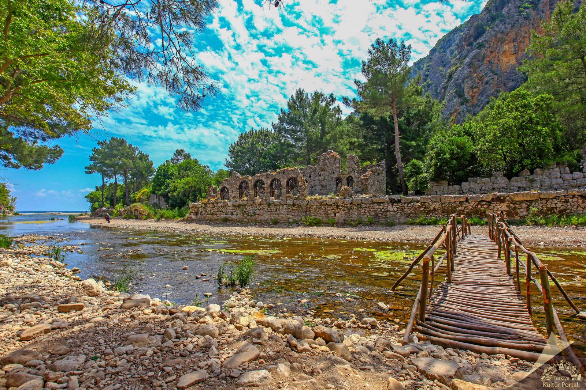
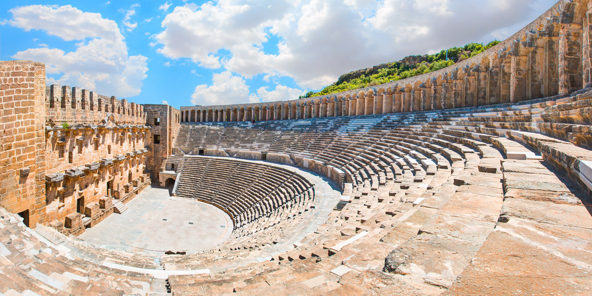

Yaz turizminin gözde noktalarından biri olan Antalya, pek çok gezilecek lokasyona, tarihi yapılara, plajlara, doğal güzelliklere
ve canlı gece hayatına ev sahipliği yapmaktadır. Antalya mavi bayraklı plajlarıyla yaz tatili denildiğinde ilk akla gelen tatil konumlarından birisidir.
Hareketli gece hayatının yanında doğası ile de göze çarpan bir konumdur. Antalya’da benzersiz bir tatil geçirmeniz için tüm detayları sizin için derledik.
Türkiye turizminin başkenti olan Antalya, dört mevsim de canlılığını koruyan ve çok sayı turizm işletmesinin bulunduğu bir ildir.
Antalya'da kültür turizmi başta olmak üzere deniz, spor, sağlık, kış, kongre, yayla, mağara, kamp ve inanç turizmi yapılabilmekte
bu turizm seçenekleri için tesisler bulunmaktadır.
Antalya'da kültür turizminin ağırlıklı olarak yapılacağı yerler kıyı şeridinin çeşitli yerleridir.
Bu bölgede Kaleiçi, tarihi yapılar, tarihi cami ve kiliseler bulunmaktadır.
Antalya'da deniz turizmi de yine kıyı şeridi boyunca yapılmaktadır. Bu bölgede kıyı turizmiyle beraber deniz turları da yapılabilmektedir.
Deniz turizminin en bilinen noktaları Kleopatra, Konyaaltı ve Lara plajlarıdır.
İklimi genel olarak Akdeniz iklimine girmektedir. Yazları sıcak ve kurak, kışları ılık ve yağışlı olarak ifade edilen iklim tipi diğer bir değişle mutedil deniz ve sıcak deniz iklim sınıfına girer,
daha iç kesimlerde ise soğuk ve yarı-kara iklim tipi görülmektedir. Yazın ortalama sıcaklık 30 - 34 derece arasındadır. Ocak ayında ise sıcaklık ortalama 9 - 15 derece arasında değişir. Şehirde kar yağması ve don gibi meteorolojik olaylar hemen hemen hiç olmaz.
Yılda ortalama 300 güneşli gün yaşayan şehrin deniz suyu sıcaklıkları kasım ayında bile yüzmek için uygun.
2022 sonu itibarıyla nüfusu 2.688.004'tür. Yüzölçümü 20.177 km2 olup km²'ye 130 kişi düşmektedir.
Nüfus yoğunluğunun en fazla olduğu ilçe ise km2 başına 5429 kişi ile Muratpaşa ilçesidir.
ADNKS tespitlerine göre en çok Konya, Burdur ve Isparta illerinden göç alan Antalya’da 2016 yılında ikamet eden yabancıların sayısı ise 60 bin 534 oldu.
Antalya’da ikamet eden yabancıların geldiği ilk 5 ülke; Rusya Federasyonu 9 bin 35, Almanya 8 bin 653, Kazakistan 5 bin 628, Ukrayna 5 bin 328, Kırgızistan 4 bin 975 şeklinde sıralanmakta.
- Düden Şelalesi
Antalya merkezinden kolayca ulaşabileceğiniz doğa harikalarından biri olan Düden Şelalesi,
merkeze sadece 10 kilometre uzaklıktaki Kepez ilçesinde yer alıyor. Halk arasında Düdenbaşı Şelalesi
olarak da bilinen Düden Şelalesi; seyir terasları, ahşap yürüyüş yolları, kafeler, restoranlar ve çay bahçeleriyle özellikle yaz aylarında çok popüler bir gezi alandır.
2 kola ayrılan Düden Şelalesi’nin suları 9 kilometre daha devam ederek Antalya'nın falezlerinden 40 metre yükseklikten Akdeniz'e dökülerek muhteşem bir manzara oluşturuyor.
Aşağı Düden Şelalesi olarak bilinen bu bölge, Antalya'nın sevilen semtlerinden Lara’da oteller, restoranlar, yürüyüş ve bisiklet yolları arasında yer aldığı için her zaman hareketli. Gezi teknelerinin çok yakınına kadar giderek falezlerden dökülen bembeyaz suları yakından görmenizi sağladığı Aşağı Düden Şelalesi ve Düden Şelalesi'ne Antalya gezinizde mutlaka uğramayı, serin şelale havasında güzel bir gün geçirmeyi unutmayın.
ÖNERİMİZ:
Düden şelalesi saat 08:00 ile 19:00 arasında ziyarete açık olduğu için bu saatler arasında gitmenizde fayda var.
- Antalya Müzesi
1922 yılında 1. Dünya Savaşı'nda işgalcilerden kurtarılan eserlerin sergilenmesi amacıyla Kaleiçi Yivli Camii'nde açılan Antalya Müzesi, 1972 yılında Konyaaltı Caddesi'nde Konyaaltı Plajı’na ve Atatürk Parkı’na 5 dakika yürüyüş mesafesindeki binasına taşındı.
30.000 m2 gibi geniş bir alanı kapsayan Antalya Müzesi, 14 sergi salonunda Pamfilya ve Pisidya bölgelerinde yapılan kazılarda çıkarılan binlerce tarihi esere ev sahipliği yapıyor.
Geniş bahçesinde Lidya lahitleri, Roma sütunları ve Helenistik dönemden kalan heykelleri görebileceğiniz bir açık hava bölümü de bulunan Antalya Müzesi, iyi düzenlenmiş koleksiyonlarıyla pek çok uluslararası ödül kazandı.
Sizi Anadolu tarihinde unutulmaz bir yolculuğa çıkacak Antalya Müzesi'nde tabiat tarihi salonu, seramik eserler salonu, imparatorlar salonu, tanrılar salonu ve mozaik salonu mutlaka görmeniz gereken yerler arasında.
- Kaleiçi
Antalya’nın Muratpaşa ilçesinde bulunan Kaleiçi, mimarisiyle dikkat çeken ve sıcak bir ruha sahip bir beldedir. Burada bol bol fotoğraf çekebilirsiniz. Yılın her dönemi keyifli ve stresten uzak bir tatil planladığınızda gelebileceğiniz Kaleiçi size harika bir alternatif olmaktadır.
Tarihte pek çok medeniyete de ev sahipliği yapmasından dolayı farklı bir tarihi barındırmaktadır. Kaleiçi, kısa sürede keşfedip, hakim olacağınız bir yerdir.
Yivli Minare, Hıdırlık Kulesi, Kesik Minare, Hadrianus Kapısı, Karatay Medresesi ve Şehzade Korkut Camii gibi pek çok tarihi hazineye de ev sahipliği yapan Antalya Kaleiçi’nin tarihi konaklarının restore edilmesi ile hizmete başlayan şık butik oteller ve pansiyonlar, her mevsim turistlerle dolu.
Kaleiçi Yat limanı karşısındaki küçük Mermerli Plajı’nda tertemiz denizin de tadını çıkarabilirsiniz. Şık restoranlarda Akdeniz ve dünya mutfaklarından lezzetler tatmak, her tarza uygun canlı müzik çalan barlarda eğlenmek, yol üstü kafelerinde kahvenizi yudumlamak veya sıcak yaz akşamlarında tarihi atmosferde hareketli sokaklarda akşam yürüyüşleri yapmak için Antalya Kaleiçi'ne mutlaka uğramanızı öneririz.
ÖNERİMİZ:
Tatil Planları'nın seyahat uzmanları olarak Kaleiçi'nin yeri bizim için çok ayrıdır.
Buradaki eski Antalya evleri arasında yer alan kafeler, barlar ve otantik meyhaneler tam bir turizm merkezinde olduğunuzu size hissettirecek.
Hem yerli hem de yabancı turistler için aşırı popüler bir nokta olduğu için fiyatlar bir tık pahalı gelebilir.
- Kleopatra Plajı
2 kilometrelik bir uzunluğa sahip olan ünlü Kleopatra Plajı, Alanya’nın tarihi yarım adası olarak bilinen yerin batısındaki Damlataş Plajı’nın sonundan başlar. Kleopatra Plajı, altın renkli kumlara sahip olmasının yanı sıra, denizinin güzelliği ve sahilinin çekiciliği olması buranın özel bir plaj olmasında etkilidir.
Denizi 8-10 metreye kadar sığdır ve bu plaj Mavi Bayraklı plajlardan sadece bir tanesidir. Sığ bir denize sahip olmasından dolayı özellikle küçük çocuklar için oldukça güvenlidir. Çevresi butik oteller, barlar, kafeler, restoranlar ve turistik tesislerle çevrili Kleopatra Plajı’nda deniz paraşütü, yelken, kano ve uçurtma sörfü gibi onlarca su sporu yapabilir veya sıcak kumlara havlunuzu sererek bu eşsiz mavi bayraklı plajda denizin ve güneşin tadını çıkarabilirsiniz.
Alanya merkezinde yer alan 2,5 kilometre uzunluğundaki büyüleyici plaj, ismini Mısır kraliçesi Kleopatra'dan alıyor.
Efsanelere göre Kleopatra, bu plajda yüzmüş, çok sevmiş ve plaja ismini vermiş.Tatilin tadını doyasıya alacağınız bu plajda kendinizi krallar ve kraliçeler gibi hissetmenizi sağlayacak. Damlataş Plajı ile yan yana olan bu özel ve güzel plajı tercih ettiğinizde kesinlikle pişman olmayacaksınız.
- Olympos Antik Kenti
Olympos Antik Kenti, dini önemi bulunan bir Likya kenti olmasının yanı sıra korsan kralları ile ünlü ve UNESCO Dünya Mirası Geçici listesinde bulunuyor.
Caretta Caretta kaplumbağalarının yavrulama bölgesi olduğu için sit alanı özelliği de bulunan bölge, doğal yaşam ve tarihin bir arada olduğu bir görsel şölen sunuyor.
UYARI:
Caretta Caretta kaplumbağalarının üreme alanı olarak da bilinen plaja ev sahipliği yapan koyda kaplumbağaların yumurtlama dönemlerinde akşamları sahile inmek, çadır kurup ateş yakmak gibi aktiviteler yasaktır.
Olympos Antik Kenti tarihi açıdan büyük öneme sahiptir. Antalya’nın Phaselis’ten sonra ikinci büyük liman kenti olarak bilinir. Olympos, Yunanca anlamı ile “ulu dağ”, tanrıların evi kabul edilir. Ne zaman kurulduğu tam olarak bilinmese de Likya Birliği sikkelerine bakıldığında MÖ 167 tarihli varlık kanıtları ile bilinen Olympos Antik Kenti hikâyesi başlıyor.
Olympos Antik Kenti oldukça büyük bir alana yayılmıştır ve halen arkeolojik çalışmalar ile gün ışığına çıkartılmaya devam etmektedir. Bizans döneminde piskoposluk merkezi olması nedeniyle de dini bir önemi bulunur.
Bir dönem korsanların egemenliğine geçmiş olsa da Helenistik dönem, Roma ve Bizans mimarisi ile şekillenmiş bir antik kent olarak bilinir.

Özellikle yaz aylarında Antalya Olympos Antik Kenti sezonu açılır. Yurt içi ve yurt dışından çok sayıda ziyaretçi bölgeyi görmeye gelir. Bir vadide yer alan bu antik kentte kış ayları kuzey rüzgârları nedeniyle soğuk geçer. Olympos, sonbahar mevsiminde ise ılık denizi ve nispeten azalan kalabalıklığı ile ayrı bir cazibe merkezi haline gelir.
ÖNERİMİZ:
Müze kartın geçerli olduğu bu antik kenti gezmek isterseniz çok büyük bir alana yayılı olduğunu belirtelim. Buna göre bir süre ayırsanız iyi olur. Açık hava müzesini gezeceğiniz gün yanınıza havlu ve güneş kremi almanızda fayda var çünkü muhteşem Olimpos Sahili'ne de bu müzeden geçerek gidiyorsunuz.
- Köprülü Kanyon
Antalya'da rafting, doğa yürüyüşü, kamp ve kaya tırmanma gibi doğa sporları yapmak için mutlaka gitmeniz gereken yerlerden olan Köprülü Kanyon, şehir merkezine 85 kilometre uzaklıktaki Köprülü Kanyon Milli Parkı içerisinde yer alıyor.
14 kilometre uzunluğuyla Türkiye'nin en uzun kanyonlarından olan Köprülü Kanyon,
yüksekliği 100 metreyi bulan sarp kaya duvarları ve etkileyici dar geçitleriyle tüm dünyadan doğa spor sevenlerin ilgisini çekiyor.
Aynı anda binlerce kişinin rafting yapabildiğine tanıklık edeceğiniz Köprülü Kanyon'da profesyonel bir sporcu olmasanız bile hocalar eşliğinde bu eğlenceyi deneyimleme şansınız var.
El değmemiş bakir doğasından dolayı 1973 yılında milli park ilan edilen Köprülü Kanyon, toplamda 366.000 dekar gibi büyük bir yeşil alanı kapsıyor. Kanyon gezinizde etkileyici Roma kemerleri, tarihi köprüler, kaleler ve antik kentler arasında unutulmaz bir yolculuk yapabilirsiniz.
Yaz sıcaklarında kaya göletlerinde buz gibi sularda da serinleyebileceğiniz Köprülü Kanyon, aynı zamanda Türkiye’nin en popüler rafting parkurlarından biri.
Çok zorlu bir rafting parkuruna sahip kanyonda profesyonellerle birlikte rafting yaparak heyecan dolu bir gün yaşayabilirsiniz.
- Aspendos Antik Kenti

Antalya'nın en çok ziyaret edilen antik kentlerinden Aspendos, sadece Anadolu'nun değil tüm Akdeniz dünyasının en iyi korunagelmiş Roma Dönemi tiyatrosuna sahip olmasıyla ünlüdür.
Kent, Serik ilçesinin yaklaşık 8 kilometre doğusunda, bölgenin en büyük nehirlerinden Köprüçay (antik Eurymedon) yakınlarındaki tepe düzlüğünde kurulmuştur.
M.Ö. 5. yüzyılda basılmış sikkelerinde adı "Estvediys" olarak geçer.
Anadolu kökenli bu ad, kentin çok eskilerden beri yerleşim gördüğünün kanıtıdır. Akdeniz ile ulaşımını ve gelişmesini yakınındaki nehre ve dolayısıyla çevresindeki bereketli topraklara borçlu olan Aspendos'ta bugün, çoğunlukla tiyatro ve su yolları ziyaret edilir.
Kente ait diğer yapıların kalıntıları ise tiyatronun yaslandığı tepenin düzlüğünde yer alır.
Eşsiz bir akustiğe sahip olan Aspendos Tiyatrosu, gerek mimari özellikleri gerekse iyi korunagelmişliği ile Roma Dönemi tiyatrolarının günümüzdeki en seçkin temsilcilerinden biridir.
Tanrılara ve devrin imparatorlarına adanan yapı, Roma tiyatro mimarisinin ve yapım tekniğinin son çizgilerini sergiler. Devrinin görkemli yapılarından biri olan Aspendos Tiyatrosu, 15-20 bin kişilik bir kapasiteye sahiptir.
İmparator Marcus Aurelius Dönemi'nde (M.S. 161-180), Theodoros'un oğlu mimar Zeno tarafından inşa edilmiştir.
Aspendos'a gelmişken; antik tiyatro yolu üzerindeki etkileyici Tarihi Aspensos Köprüsü'nü de ziyaret etmeyi unutmayın.
ÖNERİMİZ:
Aspendos Antik Kenti'ni gezerken ilk görmeniz gereken yerin Antik Tiyatro olduğuna inanıyoruz. Özellikle yaz aylarında burada belirli tarihlerde konserler veriliyor.
Tarihiniz uyuyorsa bu konserlerden birine mutlaka katılın, yüzyıllar öncesinde inşa edilmiş bir yapının hala muhteşem bir akustiğe sahip olması sizi büyüleyecektir.
- Damlataş Mağarası
Mağara, tarihi Alanya Kalesi’nin batı kıyısındadır. Mağaranın giriş kısmında 50 metrelik bir geçit vardır. Yüksekliği 15 metreyi bulan geçitten sonra silindirik bir boşluğa gelinir. Buradan mağaranın tabanına inilir.
Mağara, sarkıtlardan damlamaya devam eden su damlaları nedeniyle Damlataş adını almıştır.
Mağara, büyüleyici güzelliğinin yanı sıra astım hastalarına iyi gelen havasıyla da ünlüdür. Doktor kontrolünde mağarada belli bir süre oturarak 21 günlük tedavi kürü uygulayan hastalar vardır.
- Manavgat Şelalesi
Antalya'da düzenlenen doğa gezileri ve rafting turlarının en popüler adreslerinden olan Manavgat Şelalesi, Antalya merkezine sadece 76 kilometre uzaklıkta ve otobüsle bir saatte ulaşabileceğin bir tabiatı cenneti.
Şehrin turistik ilçelerinden Manavgat'a 3 kilometre uzaklıktaki Manavgat Şelalesi, yemyeşil ormanlar arasında kilometreler boyunca uzanıyor ve büyüleyici bir manzaraya sahip.
Manavgat Belediyesince doğal yapıya uygun çevre düzenlemesi yapılarak turizme yeniden kazandırılan Manavgat Şelalesi’nde, tüm ziyaretçilerin keyifle gezebileceği ve hizmet alabileceği restoran, büfe, satış üniteleri,
dinlenme yerleri, tuvaletler ve seyir terasları vb. oluşturulmuştur. Muhteşem bir doğa manzarasına sahip olan şelale, şehrin gürültüsünden ve kalabalığından kaçmak isteyenler için oldukça iyi bir seçenektir.
Antalya yemekleri arasında geleneksel Türk yemeklerinin yanı sıra onlarca özgün lezzet bulunur.
Tatlılardan çorbalara, hamur işlerinden zeytinyağlılara geniş bir mutfak yelpazesine sahip olan Antalya’dan,
bu lezzetlerin yalnızca birkaçını ise sizin için aşağıda sıraladık.